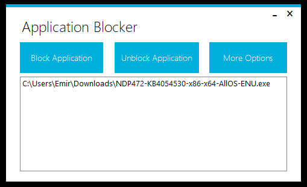

Unblocking Applications

To unblock an application, select the blocked application from the list and click "Unblock Application" button. This will unblock the selected application.
Unblocking Another (Unlisted) Application
If you have lost the blocked applications list and some programs remain as blocked, you can click "More Options" -> "Unblock Another Application". This will open a file browser. You can select an exe file to unblock.